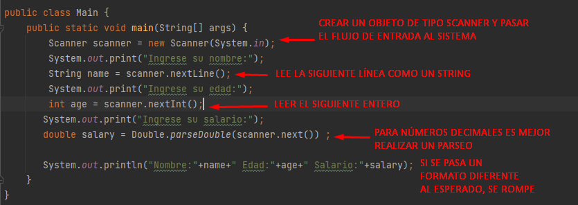
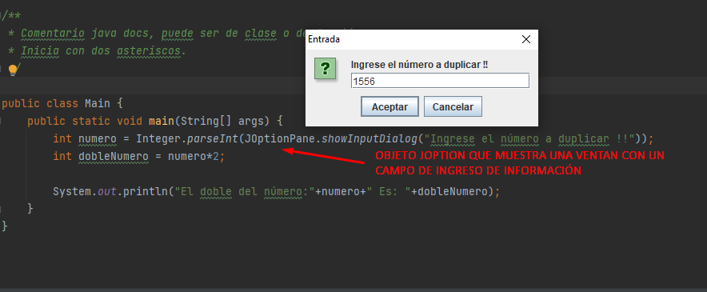
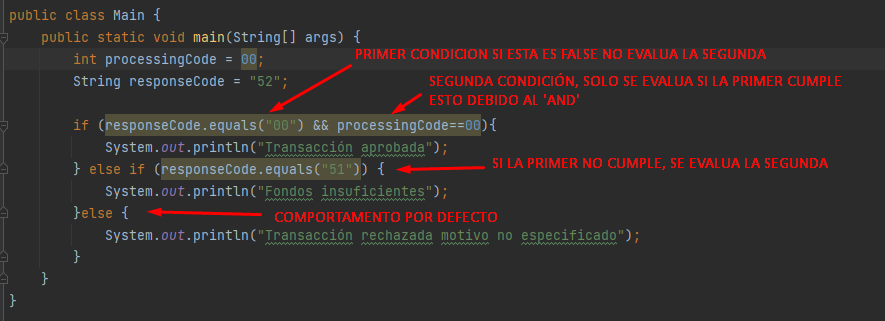
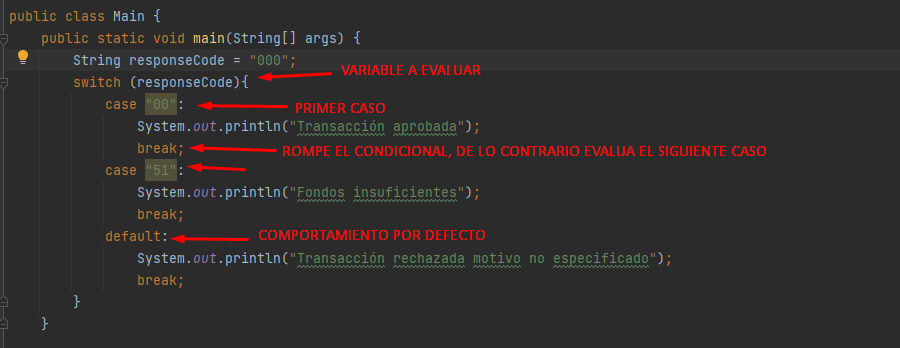
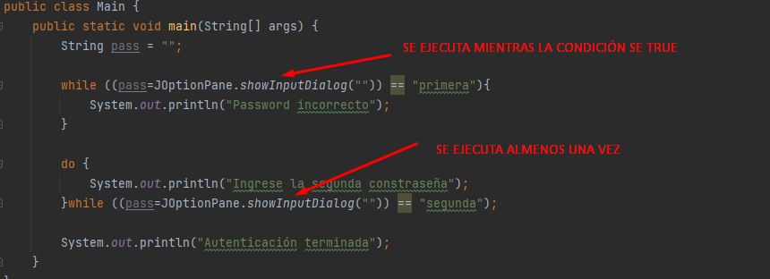
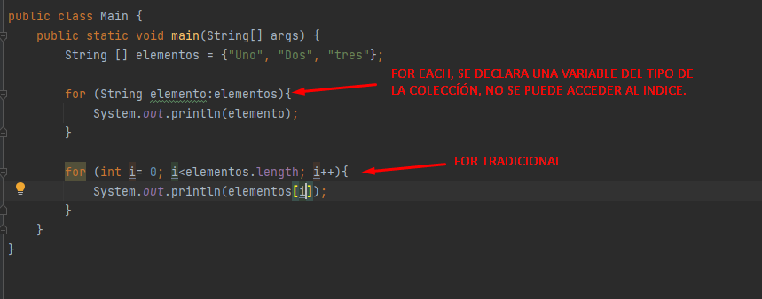
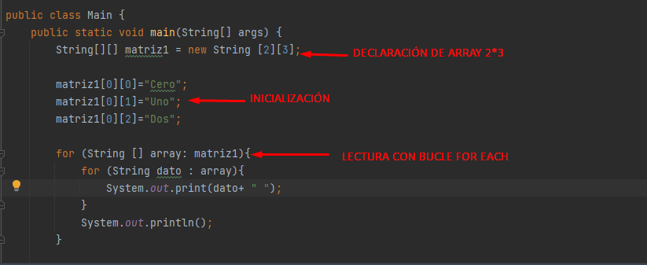
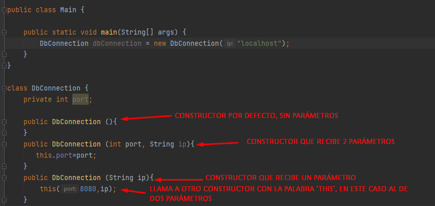

Tipos de comentarios.
Los tipos de comentarios puede ser de java docs, de bloque o de línea.

Tipos de datos.
En java existen datos primitivos y clasess, los datos primitivos no pueden ser 'null'.

Operadores.

Clase Math.
Pertenece al paquete java.lang que se carga por defecto.

Clase String.
Pertenece al paquete java.lang que se carga por defecto. Cada vez que se asigna un valor a la cadena se crea un objeto nuevo, los Strings se consideran inmutables, este comportamiento puede afectar el rendimiento.

Entrada de datos por consola.
Para ingresar datos a la aplicación se puede realizar por medio de una GUI, o por medio de la consola con objeto Scanner.
Entrada de datos por JOptionPane.
Crea una ventana emergente que permite ingresar información, esta se recibe como una cadena, si se requiere computar se debe realizar el parseo correspondiente.
Condicional IF, else if, else.
Condicionales para ejecución de un bloque de código.
Condicional Switch.
Condicionales para ejecución de un bloque de código.
Bucle while.
Bucle de iteración no definido.
Bucle For.
Bucle de iteración definido.
Arrays.
Los arrrays deben ser del mismo tipo de datos, se puede acceder a los indices de cada dimensión e iterar con bucles anidados.
Modificador final y static.
El modificador final se usa a nivel de campo para declarar constantes que pueden ser inicializadas o no en la misma línea.
El modificador 'Static' se usa a nivel de campo y de método para especificar que los mismos pertenecen a la clase y no a la instancia de la misma, por esto se debe agregar el nombre de la clase antes del uso del método o campo
Sobre carga de métodos y constructores.
Las clases permiten sobre cargar los métodos o constructores en función de que tipo de parámetros se quiren pasar. Los mismos deben ser diferentes en el tipo, cantidad o parámetros que devuelve.
